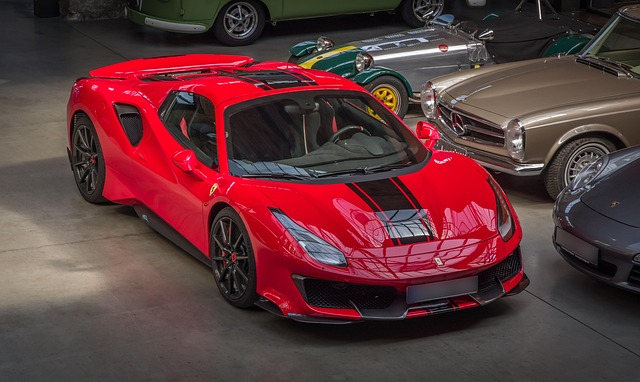

Inicio
Bienvenido a mi página sobre autos deportivos. Aquí encontrarás información básica sobre los autos más veloces y llamativos del mundo.
El deportivo es aquel automóvil que fue pensado y diseñado en cada detalle para circular a altas velocidades, por lo que su planta motriz debe ser potente y su comportamiento ágil y seguro a altas velocidad. Cuentan con un tratamiento especial en diferentes puntos de la carrocería, empezando por la suspensión, los frenos, algunos con una altura sobre el piso reducida, ajustes en la dirección y, por supuesto, un diseño aerodinámico que juega un papel importante, tanto en su desempeño como en su rendimiento.
Otros puntos importantes son su estética, reforzada con elementos como los neumáticos de perfil bajo, los asientos envolventes Recaro, las paletas del cambio detrás del volante, una transmisión manual o la tracción trasera. Para que un coche se considere deportivo, debe contar con un tiempo reducido de aceleración, una velocidad máxima elevada, mejor sistema de frenos y más potencia que un automóvil normal.

Un coche deportivo es aquel cuyo diseño se basa en maximizar el rendimiento por encima de lo práctico. El peso suele ser inferior a la tonelada y dispone de una altura reducida con respecto al suelo. La transmisión también está preparada para soportar los continuos cambios de velocidad de manera efectiva. Se suelen clasificar en deportivos y superdeportivos.
Son una clase de automóviles más pequeños que los convencionales, sus carrocerías suelen ser del tipo cupé y en buena parte de los casos son también descapotables. Se relacionan con el lujo y la ostentación, aunque el deportivo puro puede llegar a ser incómodo para los pasajeros. No suelen tener suficiente espacio por dentro, por lo que cuando se trata de transportar a una familia o a una persona que comúnmente lleve mucho equipaje, no resulta muy práctico.
Existen distintos tipos de automóviles deportivos, que se distinguen según sus características:
Un deportivo a secas o un roadster es un automóvil con prestaciones superiores a la media. Su tamaño suele ser cercano a automóviles de los segmentos B, C y D, aunque son más bajos que un turismo. Por ejemplo, el Porsche Cayman, el Nissan 350Z o el Honda NSX.

Roadster es la denominación de un deportivo descapotable de dos plazas. Ejemplos: el Mazda MX-5 o el BMW Z3. También existen deportivos con techo semidescapotable, que son denominados tipo "targa top", los cuales disponen de un panel desmontable. Algunos ejemplos de targa son el Lamborghini Jalpa, el Fiat X1/9 o el Toyota Supra.

Un muscle car es un deportivo fabricado por marcas estadounidenses, cuya diferencia radica en que tienen prestaciones altas a un precio asequible, además de ser consideradas "bestias brutas" por montar motores grandes en carrocerías normales y ser por lo general de dos puertas, o bien, en el caso del Dodge Charger o el Chevrolet Impala, llevar cuatro puertas. Actualmente, todavía existen ejemplos, tales como el Dodge Challenger, el Ford Mustang y el Chevrolet Camaro.

Un deportivo de altas prestaciones tiene un desempeño superior al de un deportivo «a secas», siendo más ligeros que turismos de potencia y tamaño similar. Algunos ejemplos: el Ferrari 458 Italia, Mercedes-Benz SLS AMG, Audi R8, Porsche 911, Lamborghini Miura o Nissan GT-R.

Un superdeportivo tiene prestaciones todavía mayores, debido a motorizaciones con características similares a los de carreras y al empleo de materiales exóticos en la construcción del chasis, la carrocería y demás componentes del vehículo. Su precio es consecuentemente mucho más alto que el de otros deportivos. Ejemplos son el Mercedes-Benz SLR McLaren, el Ferrari Enzo, el Porsche Carrera GT, el Bugatti Veyron, el Koenigsegg CCX/CCR o el Pagani Zonda.

Un gran turismo es más grande y pesado que otros deportivos, lo cual los favorece con una conducción deportiva en autopista, además de ser considerados también como "cupé de lujo personal". Suelen tener dos plazas delanteras y dos traseras más pequeñas, en configuración cupé 2+2. Ejemplos son el Maserati 3200 GT, el Alfa Romeo GT, el Ferrari 456, el Jaguar XK, el Aston Martin DB9 o el Ferrari 612 Scaglietti.

Destacados
Algunos autos deportivos famosos son:
- Ferrari LaFerrari
- Sistema híbrido HY-KERS: Incorpora un motor eléctrico junto a un V12 atmosférico para un rendimiento superior y mayor eficiencia.
- Motor V12: El corazón del LaFerrari es un motor V12 de 6.262cc que genera 800 CV.
- Potencia combinada: La potencia total del sistema híbrido supera los 960 CV, con el motor eléctrico aportando más de 150 CV.
- Diseño y aerodinámica: El diseño fusiona forma y función, optimizando el centro de gravedad y la aerodinámica para lograr el máximo rendimiento.
- Producción limitada: Solo se fabricaron 499 unidades del modelo coupé, y todas fueron distribuidas exclusivamente a clientes selectos de Ferrari.
- Prestaciones: Alcanza los 200 km/h desde parado en menos de 7 segundos y supera los 350 km/h de velocidad máxima.
- Lamborghini Aventador
- Motor: Un V12 de 6.5 litros naturalmente aspirado, que fue el corazón de la gama Aventador.
- Versiones: Se lanzó en varias versiones, incluyendo la A-M, SV, S, SVJ y la última, el Aventador LP 780-4 Ultimae, que fue el modelo de producción V12 más potente de la marca hasta el momento.
- Rendimiento: de la versión, la potencia variaba, pero el Ultimae ofrecía 780 CV, mientras que el SVJ alcanzaba 770 CV.
- Aceleración: La versión Ultimae podía acelerar de 0 a 100 km/h en 2.8 segundos, una cifra impresionante para un coche de su categoría.
- Tecnología: La versión SVJ incorporó el sistema de aerodinámica activa (ALA), que ajustaba las partes aerodinámicas para optimizar el rendimiento y el agarre.
- Porsche 911 Turbo
- Motor Bóxer Biturbo: El corazón del 911 Turbo es un motor de seis cilindros opuestos con doble turbo, que entrega una potencia y un par extraordinarios, reduciendo al mínimo el "turbo lag" gracias a tecnologías como la Geometría de Turbina Variable (VTG).
- Tracción Total: Equipado con el sistema Porsche Traction Management (PTM), que distribuye la potencia a las cuatro ruedas para lograr una tracción óptima, una aceleración fulgurante y una estabilidad superior en todas las condiciones.
- Rendimiento Extremo: El modelo actual, el 911 Turbo S, alcanza los 100 km/h en tan solo 2.7 segundos (con el paquete Sport Chrono) y supera los 330 km/h de velocidad máxima, rivalizando con los superdeportivos más exclusivos.
- Tecnología y Aerodinámica: Incluye sistemas avanzados como la suspensión activa (PASM), la aerodinámica activa (PAA) y la dirección en el eje trasero, que optimizan el manejo, la estabilidad y la eficiencia.
- Diseño Clásico y Funcional: Su estética se distingue por una carrocería más ancha y un gran alerón trasero fijo, que no solo define su silueta musculosa, sino que también mejora la carga aerodinámica para un mejor agarre a alta velocidad.
- Bugatti Chiron
- Motor W16 Quad-Turbo:El corazón del Chiron es un motor de 16 cilindros en una configuración de "W" y 8.0 litros, asistido por cuatro turbocompresores. Este motor es una maravilla de la ingeniería que produce 1,500 CV y 1,600 Nm de par.
- Prestaciones de Infarto:El Chiron acelera de 0 a 100 km/h en solo 2.4 segundos. Una versión especial, el Chiron Super Sport 300+, fue el primer coche de producción en superar los 490 km/h.
- Producción Limitada y Lujo:Solo se fabricaron 500 unidades del modelo coupé. Cada coche es una pieza de artesanía hecha a mano, con un interior minimalista y lujoso que combina materiales de la más alta calidad.
- Aerodinámica Activa: El coche cuenta con un alerón trasero y otros componentes aerodinámicos que se ajustan automáticamente para optimizar la carga aerodinámica (downforce), la refrigeración y la eficiencia del frenado.
El Ferrari LaFerrari es un hiperdeportivo híbrido de producción limitada lanzado en 2013, conocido por su innovador sistema HY-KERS que combina un potente motor V12 de 800 CV con un motor eléctrico de 163 CV, sumando más de 960 CV. Diseñado por Ferrari, no por Pininfarina, este coche es el primero de la marca con un sistema de propulsión híbrido de alto rendimiento y fue considerado uno de los más rápidos y avanzados de su época, con una aceleración de 0 a 200 km/h en 6.9 segundos y una velocidad máxima superior a los 350 km/h.

Características clave:
El Lamborghini Aventador es un superdeportivo V12 de alto rendimiento, sucesor del Murciélago, producido por Lamborghini desde 2011 hasta 2022, y su última versión fue el Aventador LP 780-4 Ultimae, con 780 CV de potencia y una aceleración de 0 a 100 km/h en 2.8 segundos. Este modelo es conocido por su diseño agresivo, tecnología avanzada, producción limitada en algunas de sus versiones, y un motor V12 naturalmente aspirado que se considera uno de los más potentes del mercado.

Características principales
El Porsche 911 Turbo es un icónico deportivo de alto rendimiento que ha sido un pilar de la marca desde su introducción en 1974. A diferencia de un modelo de producción limitada, el 911 Turbo es una variante de producción regular, conocida por combinar la practicidad diaria con un rendimiento extremo. Se distingue por su motor bóxer de seis cilindros turboalimentado, su sistema de tracción total y su distintiva carrocería ancha. A lo largo de las décadas, ha evolucionado para incorporar tecnologías de vanguardia como la aerodinámica activa y la dirección en las ruedas traseras, lo que lo convierte en uno de los deportivos más rápidos y versátiles del mundo.

Características clave:
El Bugatti Chiron es un hiperdeportivo de lujo de producción limitada, lanzado en 2016 como sucesor del Veyron. Conocido por su ingeniería extrema y un rendimiento sin precedentes, el Chiron se distingue por su enfoque en la potencia bruta de un motor de combustión interna. Con un diseño distintivo y una producción sumamente exclusiva, este coche se ha posicionado como el epítome de la velocidad y el lujo, rompiendo récords de velocidad y estableciendo nuevos estándares en el mundo de los automóviles de élite.

Características clave:
.
Historia
La historia de los autos deportivos es un fascinante recorrido por la evolución de la ingeniería, el diseño y la pasión por la velocidad. Aunque la definición exacta de un "auto deportivo" ha evolucionado con el tiempo, en general se refiere a un automóvil diseñado para ofrecer un rendimiento superior en términos de velocidad, manejo y aceleración, a menudo sacrificando el confort y la practicidad de los autos de uso diario.
Los inicios (finales del siglo XIX y principios del XX)
Los primeros automóviles eran, en esencia, carruajes sin caballos. Sin embargo, a medida que la tecnología de los motores de combustión interna avanzó, surgió un interés por la velocidad y la competición. Se disputaron las primeras carreras y se comenzaron a fabricar vehículos con mayor potencia y menor peso.
Aunque existen varios contendientes, el Hispano-Suiza Alfonso XIII (1911) y el Vauxhall Prince Henry Sports Torpedo (1914) son a menudo citados como los primeros autos deportivos "verdaderos". Estos vehículos se destacaron por su potencia y rendimiento superior a la media de la época.
- Bugatti Type 35: Un ícono de la competición, este auto dominó las carreras en la década de 1920.
- Alfa Romeo 8C: Conocido por su belleza y sus victorias en las carreras de resistencia.
- Mercedes-Benz SSK: Un potente y lujoso deportivo de alto rendimiento.
- Porsche 356 (1948): El primer automóvil con el nombre Porsche, sentó las bases de la marca.
- Jaguar XK120 (1948): Se convirtió en el coche de producción más rápido del mundo en su momento.
- Ferrari 250 GTO (1962): Considerado por muchos como uno de los mejores autos de todos los tiempos, tanto por su belleza como por su rendimiento.
- Lamborghini Miura (1966): Se le atribuye ser el primer "superdeportivo" del mundo, con su revolucionario motor V12 montado en posición central.
- Ford Mustang (1964): Aunque no es un deportivo puro, su diseño y potente motor lo convirtieron en un ícono.
- Chevrolet Corvette (década de 1960): El deportivo estadounidense por excelencia.
- Porsche 959 (1986): Introdujo la tracción a las cuatro ruedas en los deportivos de alto rendimiento.
- McLaren F1 (1992): Conocido por ser el auto de producción más rápido del mundo durante muchos años, con un diseño innovador de tres asientos.
- Bugatti Veyron (2005): El primer "hiperdeportivo" en superar los 400 km/h.
La era de entreguerras (décadas de 1920 y 1930)
Esta época vio el auge de marcas que se convertirían en leyendas. Los autos deportivos se volvieron más elegantes y aerodinámicos. Se perfeccionaron los motores, se introdujo la sobrealimentación y se exploraron nuevos diseños de carrocería.
La posguerra y el auge de las marcas legendarias (décadas de 1940 a 1960)
Después de la Segunda Guerra Mundial, la industria automotriz se recuperó y la demanda de autos deportivos creció. Fue una época de innovación y de nacimiento de algunos de los modelos más icónicos de la historia.
La era de los "muscle cars" y la crisis del petróleo (décadas de 1960 y 1970)
En Estados Unidos, la década de 1960 fue la edad de oro de los "muscle cars", vehículos con grandes motores V8 en carrocerías de producción masiva.
La crisis del petróleo de la década de 1970 afectó la producción de autos con motores grandes y de alto consumo. Sin embargo, las marcas europeas y japonesas continuaron innovando, enfocándose en la eficiencia y el diseño.
La era moderna y el avance tecnológico (década de 1980 en adelante)
A partir de la década de 1980, la tecnología comenzó a jugar un papel fundamental en el diseño de los autos deportivos. La electrónica, la aerodinámica activa y los nuevos materiales (como la fibra de carbono) transformaron por completo el rendimiento de los vehículos.
La era de los híbridos y eléctricos: En el siglo XXI, marcas como Porsche, Ferrari y Tesla han liderado el camino con modelos híbridos y eléctricos que combinan el rendimiento con la sostenibilidad, redefiniendo el futuro de los autos deportivos.
Contacto
Si eres un fanático de los autos deportivos, puedes escribirme a: autosdeportivos@ejemplo.com